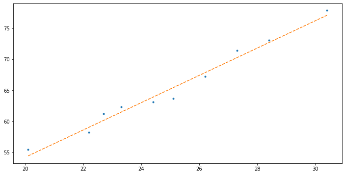
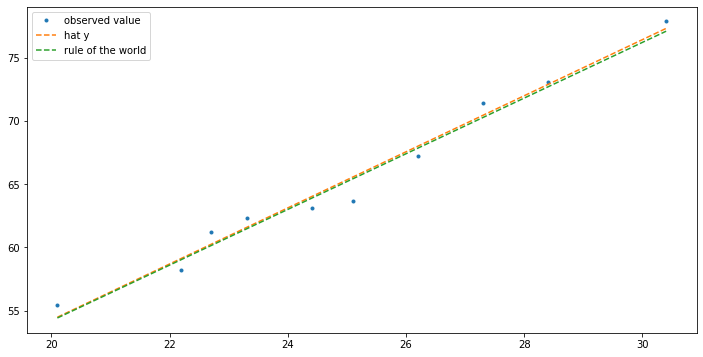

#collapse-hide
import matplotlib.pyplot as plt
import tensorflow as tf 1. 단순선형회귀 (BDA)
python
단순선형회귀
로드맵
- 오늘수업할내용: 단순선형회귀
- 단순선형회귀를 배우는 이유?
- 우리가 배우고싶은것: 심층신경망(DNN) \(\to\) 합성곱신경망(CNN) \(\to\) 적대적생성신경망(GAN)
- 심층신경망을 바로 이해하기 어려움
- 다음의 과정으로 이해해야함: 선형대수학 \(\to\) 회귀분석 \(\to\) 로지스틱회귀분석 \(\to\) 심층신경망
선형회귀
- 상황극 - 날이 더울수록 아이스아메리카노의 판매량이 증가함 - 이를 바탕으로 일기예보의 온도자료를 이용하여 다음과 같은 수식을 이용해 아이스아메리카노의 판매량을 예측할 수 있음
\[아이스아메리카노 = \beta_1 \times 온도 + \epsilon\]
- 가짜자료 생성
온도 \({\bf x}\)가 아래와 같다고 하자.(tf.constant 함수를 이용하여 상수 텐서를 생성)
#collapse-hide
x=tf.constant([20.1, 22.2, 22.7, 23.3, 24.4, 25.1, 26.2, 27.3, 28.4, 30.4]) # 기온
x<tf.Tensor: shape=(10,), dtype=float32, numpy=
array([20.1, 22.2, 22.7, 23.3, 24.4, 25.1, 26.2, 27.3, 28.4, 30.4],
dtype=float32)>아이스아메리카노의 판매량 \({\bf y}\)이 아래와 같다고 하자. (판매량은 정수로 나오겠지만 편의상 소수점도 가능하다고 생각하자)
\[{\bf y} \approx 10.2 +2.2 {\bf x}\]
- 여기에서 10.2, 2.2 의 숫자는 임의로 정한 \(\beta_0,\, \beta_1\)
- 식의의미: 온도가 0일때 10.2잔정도 팔림 + 온도가 1도 증가하면 2.2잔정도 더 팔림
#collapse-hide
tf.random.set_seed(43052)
epsilon=tf.random.normal([10]) ## 오차항 생성
y=10.2 + 2.2*x + epsilon
y<tf.Tensor: shape=(10,), dtype=float32, numpy=
array([55.418365, 58.194283, 61.230827, 62.312557, 63.107002, 63.69569 ,
67.247055, 71.4365 , 73.1013 , 77.84988 ], dtype=float32)>- 우리는 아래와 같은 자료를 모았다고 생각하자.
- tensorflow 문법에 관한 내용은 이후 수업에서 다루니 크게 신경쓰지 말자
#collapse-hide
tf.transpose(tf.concat([[x],[y]],0))<tf.Tensor: shape=(10, 2), dtype=float32, numpy=
array([[20.1 , 55.418365],
[22.2 , 58.194283],
[22.7 , 61.230827],
[23.3 , 62.312557],
[24.4 , 63.107002],
[25.1 , 63.69569 ],
[26.2 , 67.247055],
[27.3 , 71.4365 ],
[28.4 , 73.1013 ],
[30.4 , 77.84988 ]], dtype=float32)>- 그려보자.
#collapse-hide
plt.figure(figsize=(12,6))
plt.plot(x,y,'.') # 파란점, 관측한 데이터
plt.plot(x,10.2 + 2.2*x, '--') # 주황색점선, 세상의 법칙 
- 우리의 목표: 파란색점(관측값)에 기반하여 온도에 따른 아이스크림 판매량에 대한 일반화 식을 만드는 것
- 아이디어: 데이터를 보니까 \(x\)와 \(y\)가 선형의 관계에 있는듯 보인다. 즉 모든 \(i=1,2,\dots, 10\)에 대하여 아래를 만족하는 적당한 \(\beta_0,\beta_1\)가 존재할것 같다.
\[y_{i} \approx \beta_1 x_{i}+\beta_0\]
- 어림짐작으로 \(\beta_0,\beta_1\)를 알아내보자.
데이터를 살펴보자.
#collapse-hide
tf.transpose(tf.concat([[x],[y]],0))<tf.Tensor: shape=(10, 2), dtype=float32, numpy=
array([[20.1 , 55.418365],
[22.2 , 58.194283],
[22.7 , 61.230827],
[23.3 , 62.312557],
[24.4 , 63.107002],
[25.1 , 63.69569 ],
[26.2 , 67.247055],
[27.3 , 71.4365 ],
[28.4 , 73.1013 ],
[30.4 , 77.84988 ]], dtype=float32)>적당히 왼쪽*2+15 = 오른쪽의 관계가 성립하는것 같다.
따라서 \(\beta_0=15, \beta_1=2\) 로 추론할 수 있겠다.
- 누군가가 \((\beta_0,\beta_1)=(14,2)\) 이라고 주장할 수 있다. (어차피 지금은 감각으로 추론하는 과정이니까)
- 새로운 주장으로 인해서 \((\beta_0,\beta_1)=(15,2)\) 로 볼 수도 있고 \((\beta_0,\beta_1)=(14,2)\) 로 볼 수도 있다. 이중에서 어떠한 추정치가 좋은지 판단할 수 있을까? - 후보1: \((\beta_0,\beta_1)=(15,2)\) - 후보2: \((\beta_0,\beta_1)=(14,2)\)
- 가능한 \(y_i \approx \beta_0 + \beta_1 x_i\) 이 되도록 만드는 \((\beta_0,\beta_1)\) 이 좋을 것이다. \(\to\) 후보 1,2를 비교해보자.
(관찰에 의한 비교)
후보1에 대해서 \(i=1,2\)를 넣고 관찰하여 보자.
20.1 * 2 + 15 , 55.418365 # i=1 (55.2, 55.418365)22.2 * 2 + 15 , 58.194283 # i=2(59.4, 58.194283)후보2에 대하여 \(i=1,2\)를 넣고 관찰하여 보자.
20.1 * 2 + 14 , 55.418365 # i=1 (54.2, 55.418365)22.2 * 2 + 14 , 58.194283 # i=2(58.4, 58.194283)\(i=1\)인 경우에는 후보1이 더 잘맞는것 같은데 \(i=2\)인 경우는 후보2가 더 잘맞는것 같다.
(좀 더 체계적인 비교)
\(i=1,2,3, \dots, 10\) 에서 후보1과 후보2중 어떤것이 더 좋은지 비교하는 체계적인 방법을 생각해보자.
후보 1,2에 대하여 \(\sum_{i=1}^{10} (y_i -\beta_0 -\beta_1 x_i)^2\)를 계산하여 비교해보자.
sum1=0
for i in range(10):
sum1=sum1+(y[i]-15-2*x[i])**2 sum2=0
for i in range(10):
sum2=sum2+(y[i]-14-2*x[i])**2 sum1,sum2(<tf.Tensor: shape=(), dtype=float32, numpy=14.734169>,
<tf.Tensor: shape=(), dtype=float32, numpy=31.521088>)후보1이 더 \(\sum_{i=1}^{10} (y_i -\beta_0 -\beta_1 x_i)^2\)의 값이 작다.
후보1이 종합적으로 후보2에 비하여 좋다. 이 과정을 무한번 반복하면 최적의 추정치를 찾을 수 있다.
- 그런데 이 알고리즘은 현실적으로 구현이 불가능하다. (무한번 계산하기도 힘들고, 언제 멈출지도 애매함)
- 수학을 이용해서 좀 더 체계적으로 찾아보자. 결국 아래식을 가장 작게 만드는 \(\beta_0,\beta_1\)을 찾으면 된다.
\[\sum_{i=1}^{10} (y_i -\beta_0 -\beta_1 x_i)^2\]
그런데 결국 \(\beta_0, \beta_1\)에 대한 이차식인데 이 식을 최소화하는 \(\beta_0,\beta_1\)을 구하기 위해서는 아래를 연립하여 풀면된다.
\[\begin{cases} \frac{\partial}{\partial \beta_0}\sum_{i=1}^{10} (y_i -\beta_0 -\beta_1 x_i)^2=0 \\ \frac{\partial}{\partial \beta_1}\sum_{i=1}^{10} (y_i -\beta_0 -\beta_1 x_i)^2=0 \end{cases}\]
- 풀어보자.
\[\begin{cases} \sum_{i=1}^{10} -2(y_i -\beta_0 -\beta_1 x_i)=0 \\ \sum_{i=1}^{10} -2x_i(y_i -\beta_0 -\beta_1 x_i)=0 \end{cases}\]
정리하면
\[\hat{\beta}_0= \bar{y}-\hat{\beta}_1 \bar{x}\]
\[\hat{\beta}_1= \frac{S_{xy}}{S_{xx}}=\frac{\sum_{i=1}^{n}(x_i-\bar{x})(y_i-\bar{y})}{\sum_{i=1}^{n}(x_i-\bar{x})^2}\]
- 따라서 최적의 추정치 \((\hat{\beta}_0,\hat{\beta}_1)\)를 이용한 추세선을 아래와 같이 계산할 수 있음.
Sxx= sum((x-sum(x)/10)**2)
Sxx<tf.Tensor: shape=(), dtype=float32, numpy=87.848976>Sxy= sum((x-sum(x)/10)*(y-sum(y)/10))
Sxy<tf.Tensor: shape=(), dtype=float32, numpy=194.64737>beta1_estimated = Sxy/Sxx
beta1_estimated <tf.Tensor: shape=(), dtype=float32, numpy=2.2157044>beta0_estimated = sum(y)/10 - beta1_estimated * sum(x)/10
beta0_estimated<tf.Tensor: shape=(), dtype=float32, numpy=9.944572>#collapse-hide
plt.figure(figsize=(12,6))
plt.plot(x,y,'.',label= "observed value")
plt.plot(x,beta0_estimated + beta1_estimated * x, '--',label="hat y") # 주황색선: 세상의 법칙을 추정한선
plt.plot(x,10.2 + 2.2* x, '--',label = "rule of the world") # 초록색선: ture, 세상의법칙
plt.legend()<matplotlib.legend.Legend at 0x2e12f3afd90>
Note: 샘플수가 커질수록 주황색선은 점점 초록색선으로 가까워진다. (대수의 법칙은 항상 성립하는 듯?)
- 꽤 훌륭한 도구임. 그런데 약간의 단점이 존재한다.
공식이 좀 복잡함..
\(x\)가 여러개일 경우 확장이 어려움
- 단점을 극복하기 위해서 우리가 지금까지 했던논의를 매트릭스로 바꾸어서 다시 써보자.
모형의 매트릭스화
- 모형을 행렬로 표현하면 변수가 여러개인 multiple linear regression 에서도 단순형태로 표현이 가능하다.
우리의 모형은 아래와 같다.
\(y_i = \beta_0 + \beta_1 x_i + \epsilon_i, \quad i=1,2,\dots,10\)
풀어서 쓰면
\(\begin{cases} y_1 = \beta_0 +\beta_1 x_1 + \epsilon_1 \\ y_2 = \beta_0 +\beta_1 x_2 + \epsilon_2 \\ \dots \\ y_{10} = \beta_0 +\beta_1 x_{10} + \epsilon_{10} \end{cases}\)
아래와 같이 쓸 수 있다.
$ \[\begin{bmatrix} y_1 \\ y_2 \\ \dots \\ y_{10} \end{bmatrix}\] = \[\begin{bmatrix} 1 & x_1 \\ 1 & x_2 \\ \dots & \dots \\ 1 & x_{10} \end{bmatrix}\begin{bmatrix}\beta_0 \\ \beta_1 \end{bmatrix}\]- \[\begin{bmatrix} \epsilon_1 \\ \epsilon_2 \\ \dots \\ \epsilon_{10} \end{bmatrix}\] $
벡터와 매트릭스 형태로 정리하면
\({\bf y} = {\bf X} {\boldsymbol \beta} + \boldsymbol{\epsilon}\)
- 손실함수의 매트릭스화: 우리가 최소화 하려던 손실함수는 아래와 같다.
\(loss=\sum_{i=1}^{n}(y_i-\beta_0-\beta_1x_i)^2\)
이것을 벡터표현으로 하면 아래와 같다.
\(loss=\sum_{i=1}^{n}(y_i-\beta_0-\beta_1x_i)^2=({\bf y}-{\bf X}{\boldsymbol \beta})^\top({\bf y}-{\bf X}{\boldsymbol \beta})\)
풀어보면
\(loss=({\bf y}-{\bf X}{\boldsymbol \beta})^\top({\bf y}-{\bf X}{\boldsymbol \beta})={\bf y}^\top {\bf y} - {\bf y}^\top {\bf X}{\boldsymbol\beta} - {\boldsymbol\beta}^\top {\bf X}^\top {\bf y} + {\boldsymbol\beta}^\top {\bf X}^\top {\bf X} {\boldsymbol\beta}\)
- 미분하는 과정의 매트릭스화
loss를 최소화하는 \({\boldsymbol \beta}\)를 구해야하므로 loss를 \({\boldsymbol \beta}\)로 미분한식을 0이라고 놓고 풀면 된다.
\(\frac{\partial}{\partial \boldsymbol{\beta}} loss = \frac{\partial}{\partial \boldsymbol{\beta}} {\bf y}^\top {\bf y} - \frac{\partial}{\partial \boldsymbol{\beta}} {\bf y}^\top {\bf X}{\boldsymbol\beta} - \frac{\partial}{\partial \boldsymbol{\beta}} {\boldsymbol\beta}^\top {\bf X}^\top {\bf y} + \frac{\partial}{\partial \boldsymbol{\beta}} {\boldsymbol\beta}^\top {\bf X}^\top {\bf X} {\boldsymbol\beta}\)
$= 0 - {}^- {}^ + 2{}^ $
따라서 \(\frac{\partial}{\partial \boldsymbol{\beta}}loss=0\)을 풀면 아래와 같다.
$= ({}){-1}{}^ $
- 공식도 매트릭스로 표현하면 : \(\left(\boldsymbol{\hat\beta}= ({\bf X}^\top {\bf X})^{-1}{\bf X}^\top {\bf y}\right) \leftarrow\) 외우자 이건..
- 적용을 해보자.
(X를 만드는 방법1)
X=tf.transpose(tf.concat([[[1.0]*10],[x]],0)) #
X <tf.Tensor: shape=(10, 2), dtype=float32, numpy=
array([[ 1. , 20.1],
[ 1. , 22.2],
[ 1. , 22.7],
[ 1. , 23.3],
[ 1. , 24.4],
[ 1. , 25.1],
[ 1. , 26.2],
[ 1. , 27.3],
[ 1. , 28.4],
[ 1. , 30.4]], dtype=float32)>(X를 만드는 방법2)
tf.concat([[[1.0]*10],[x]],0)<tf.Tensor: shape=(2, 10), dtype=float32, numpy=
array([[ 1. , 1. , 1. , 1. , 1. , 1. , 1. , 1. , 1. , 1. ],
[20.1, 22.2, 22.7, 23.3, 24.4, 25.1, 26.2, 27.3, 28.4, 30.4]],
dtype=float32)>tf.concat([[[1.0]*10],[x]],0).TAttributeError:
'EagerTensor' object has no attribute 'T'.
If you are looking for numpy-related methods, please run the following:
from tensorflow.python.ops.numpy_ops import np_config
np_config.enable_numpy_behavior()- 위 처럼 하면 error가 남
- error를 읽어보면 numpy 스타일로 구성하고 싶을 경우
np_config.enable_numpy_behavior()을 이용하라는 문구가 나옴
from tensorflow.python.ops.numpy_ops import np_config
np_config.enable_numpy_behavior()X = tf.concat([[[1.0]*10],[x]],0).T오 이제된다.
X<tf.Tensor: shape=(10, 2), dtype=float32, numpy=
array([[ 1. , 20.1],
[ 1. , 22.2],
[ 1. , 22.7],
[ 1. , 23.3],
[ 1. , 24.4],
[ 1. , 25.1],
[ 1. , 26.2],
[ 1. , 27.3],
[ 1. , 28.4],
[ 1. , 30.4]], dtype=float32)>tf.linalg.inv(X.T @ X) @ X.T @ y<tf.Tensor: shape=(2,), dtype=float32, numpy=array([9.945015 , 2.2156935], dtype=float32)>결과를 보면 $ (_0,_1) = (9.94…,2.21…)$ 로 산출되었다.
- 잘 구해진다.
- 그런데..
beta0_estimated,beta1_estimated(<tf.Tensor: shape=(), dtype=float32, numpy=9.94458>,
<tf.Tensor: shape=(), dtype=float32, numpy=2.2157042>)값이 좀 다르다..?
- 같은 값입니다! 신경쓰지 마세요! 텐서플로우가 좀 대충계산합니다.
- 실제로 조금 더 정확히 계산하기 위해서는 tensorflow 안에 내장된 numpy 를 사용한다.
import tensorflow.experimental.numpy as tnp x=tnp.array([20.1, 22.2, 22.7, 23.3, 24.4, 25.1, 26.2, 27.3, 28.4, 30.4])
y=10.2 + 2.2*x + epsilon beta1_estimated = sum((x-sum(x)/10)*(y-sum(y)/10)) / sum((x-sum(x)/10)**2)
beta0_estimated = sum(y)/10 - beta1_estimated * sum(x)/10 beta0_estimated, beta1_estimated(<tf.Tensor: shape=(), dtype=float64, numpy=9.944573294798559>,
<tf.Tensor: shape=(), dtype=float64, numpy=2.2157046054834106>)X=tnp.concatenate([[tnp.array([1.0]*10)],[x]],0).T
tf.linalg.inv(X.T @ X) @ X.T @ y<tf.Tensor: shape=(2,), dtype=float64, numpy=array([9.94457329, 2.21570461])>do next
- 선형대수학의 미분이론..
- tensorflow에서 매트릭스 연산을 자유롭게 다루기
- 정규방정식을 이용하여 베타계수 추정하는 법하고 벡터 미분 정리해서 추가하자
Extra
회귀계수 추정
\[Loss = \sum (y-\beta_0-\beta_1 x)\]
- \(\beta_0\) 추정
\[L=Loss = \sum (y-\beta_0-\beta_1 x)\]
\[\frac {d L}{d \beta_0} = -2\sum(y-\beta_0-\beta_1x) = 0\]
\[\therefore\,\,\hat \beta_0 = \bar y -\beta_1 \bar x\]
- \(\beta_1\) 추정
\[\begin{align}\frac {d L}{d \beta_1} &= \sum x \left(y-\beta_0-\beta_1x\right) \\ \\ \nonumber & = \left (\sum xy -\beta_1 x^2\right )- n\bar x\left (\bar y -\beta_1\bar x \right) \\ \\ \nonumber &= \left (\sum xy -\bar x \bar y\right ) -\beta_1 \left (\sum x^2 - (\bar x)^2\right )\nonumber\end{align}\]
\[\begin{align} \therefore \hat {\beta_1} &= \frac{\sum xy -\bar x \bar y}{\sum x^2 - (\bar x)^2} \nonumber \\ \\ &= \frac {S_{xy}}{S_{xx}} \nonumber \end{align}\]
벡터 미분 / 매트릭스 미분
\[L=loss=({\bf y}-{\bf X}{\boldsymbol \beta})^\top({\bf y}-{\bf X}{\boldsymbol \beta})\]
벡터 미분
\[\begin{align} x^{\top}y &= \begin{bmatrix}x_1\dots x_n\end{bmatrix}\begin{bmatrix} y_1 \\ \dots \\ y_n\end{bmatrix}\nonumber \\ \\ &= x_1y_1 + x_2y_2+\dots x_ny_n\nonumber \end{align}\]
위를 미분하면
\[\begin{align} \frac {d x^{\top}y}{d x} &= \, \begin{bmatrix} \frac {d}{d x_1} \\ \dots \\ \frac {d}{d x_n} \end{bmatrix} ( x_1y_1 + x_2y_2+\dots x_ny_n) \nonumber \\ \\ &= \, \begin{bmatrix} y_1 \\ \dots \\ y_n\end{bmatrix}=y \nonumber \end{align}\]
벡터 미분의 다른풀이
(1)
\[ \frac {d x^{\top}y}{d x} = \left (\frac {d x^{\top}}{d x}\right) y=y\]
\[\begin{align}\left( \frac {d x^{\top}}{d x} \right) = \begin{bmatrix} \frac {d}{d x_1} \\ \dots \\ \frac {d}{d x_{n}} \end {bmatrix} \begin{bmatrix} x_1 \dots x_n \end{bmatrix} =\begin{bmatrix}\frac {d x_1}{d x_1} & \dots & \frac {d x_n}{d x_1} \\ \dots & \dots &\dots \\ \frac {d x_1}{d x_n} & \dots & \frac {d x_n}{d x_n} \end{bmatrix} = \mathbf{I} \nonumber \end{align}\]
\[\therefore \quad \frac {d x^{\top}y}{d x} = \left (\frac {d x^{\top}}{d x}\right) y = \mathbf{I} y = y\]
(2)
\[ \frac {d y^{\top}x}{d x} = \left (\frac {d y^{\top}x}{d x}\right) =y \]
$ y^{} x $는 \(1 \times 1\) 차원이므로 인간이면 이해할 수 있을 듯?
(3)
\[\frac {d}{d \boldsymbol{\beta}} \left ( \mathbf{y^{\top}X\boldsymbol \beta}\right ) = \mathbf{X^{\top}y}\]
\(\mathbf{y^{\top}X\boldsymbol \beta}\) 는 \(1 \times 1\) 인 스칼라 이므로
\[\mathbf{y^{\top}X\boldsymbol \beta} = \left (\mathbf{y^{\top}X\boldsymbol \beta}\right)^{\top} = \boldsymbol \beta^{\top}\mathbf{X^{\top} y}\]
따라서
\[\begin{align} \frac {d}{d \boldsymbol{\beta}} \left ( \mathbf{y^{\top}X\boldsymbol \beta}\right ) &= \frac {d}{d \boldsymbol{\beta}} \left (\boldsymbol \beta^{\top}\mathbf{X^{\top} y}\right )\nonumber \\ \\ &= \left ( \frac{d}{d \boldsymbol{\beta}}\boldsymbol{\beta}^{\top}\right)\mathbf{X^{\top y}} \nonumber\\ \\ &= \mathbf{I\,X^{\top}y} \nonumber \\ \\ &= \mathbf{X^{\top}y} \nonumber \end{align}\]
(4)
\[ \frac {d }{d \mathbf {y}} (\mathbf{y^{\top}y}) = 2\mathbf{y}\]
\[ d\, \mathbf{y} = \left [\frac {d}{y_1}, \,\frac {d}{y_2}\dots\dots \frac {d}{y_n}\right ]\]
\[\mathbf{y^{\top}y} = \sum{y_i}^2\]
\[\therefore \quad \frac {d }{d \mathbf {y}} (\mathbf{y^{\top}y}) = 2\mathbf{y}\]
참고할 틀린풀이
- 아래와 같은 풀이는 1번의 벡터 미분의 다른 풀이처럼 풀면 안된다.
\[ \frac {d }{d \mathbf {y}} (\mathbf{y^{\top}y}) = \mathbf{y}\]
\[ \frac {d\,\mathbf{y^{\top}y}}{d \,\mathbf{y}} = \left (\frac {d\, \mathbf{y^{\top}y}}{d\, \mathbf y}\right) \mathbf y= \mathbf{I} y \neq y\]
because 스칼라 경우를 생각해보자
(틀린풀이 )\(\quad \frac {d }{d\,y} y^2 = \left (\frac {d}{d\,y } yy \right) = y\) ?
(올바른 풀이) \(\quad \frac {d }{d\,y} y^2 = \left (\frac {d}{d\,y } y_1 \right)+ \left (\frac {d}{d\,y } y_2 \right) = 2y\)
스칼라를 예제로 들었는데 벡터에서 이런 느낌이라고 생각하자 이게 표준적으로 사용되는 설명은 아니지만 이해적? 으로는 간편한 듯
다른풀이 (3)번의 경우도 원래는 안되는데 값이 스칼라 이므로 틀린풀이 처럼 안되는 경우이나 1 x 1 행렬이므로 가능한 것이다.
다시 벡터로 돌아오면
(올바른 풀이) \(\quad \left ( \frac {d}{d\,\mathbf{y}} (\mathbf{y^{\top}y})\right ) = A + B\)
\(A = f(\mathbf y)\) , \(B = g(\mathbf y)\) 라고 생각하자
$ A =( ) = = $
\(B\) 의 경우도 위와 동일하므로
\[\frac {d\,(A+B)}{d\,\mathbf{y}} = \{f(\mathbf {y})\}^{\prime} +\{g(\mathbf {y})\}^{\prime} = 2\mathbf{y}\]
(5)
\[\frac{\partial}{\partial \boldsymbol{\beta}} {\boldsymbol\beta}^\top {\bf X}^\top {\bf X} {\boldsymbol\beta} = 2\mathbf{X^{\top}X}\boldsymbol \beta\]
4번의 원리를 이용하면 이지이지
loss를 미분
\[L=loss=({\bf y}-{\bf X}{\boldsymbol \beta})^\top({\bf y}-{\bf X}{\boldsymbol \beta})\]
\[L = {\bf y}^\top {\bf y} - {\bf y}^\top {\bf X}{\boldsymbol\beta} - {\boldsymbol\beta}^\top {\bf X}^\top {\bf y} + {\boldsymbol\beta}^\top {\bf X}^\top {\bf X} {\boldsymbol\beta}\]
\(L\) 을 미분하면
\[\begin{align} \frac{\partial}{\partial \boldsymbol{\beta}} L &= \frac{\partial}{\partial \boldsymbol{\beta}} {\bf y}^\top {\bf y} - \frac{\partial}{\partial \boldsymbol{\beta}} {\bf y}^\top {\bf X}{\boldsymbol\beta} - \frac{\partial}{\partial \boldsymbol{\beta}} {\boldsymbol\beta}^\top {\bf X}^\top {\bf y} + \frac{\partial}{\partial \boldsymbol{\beta}} {\boldsymbol\beta}^\top {\bf X}^\top {\bf X} {\boldsymbol\beta} \nonumber \\ \\ &= 0 - \mathbf{X^{\top}y} - \mathbf{X^{\top}y} + 2\mathbf{X^{\top}X\boldsymbol \beta}\nonumber \end{align}\]
따라서 아래와 같은식이 성립한다.
\[ \mathbf{X^{\top}y}= \mathbf{X^{\top} X} \boldsymbol \beta \]
\[\hat {\boldsymbol \beta} = \mathbf{\left (X^{\top}X\right)^{-1}Xy} \]